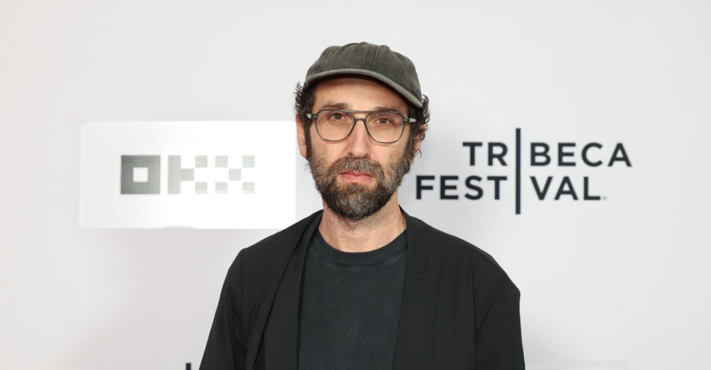

A visual journey / Darlin’ to the presentThrough the years.
Start with Darlin’, follow the early concerts, and continue through the helmets, the pyramid, and the individual artists behind Daft Punk.
Darlin’: before Daft Punk.
In 1992, Guy-Manuel de Homem-Christo and Thomas Bangalter formed Darlin’ with Laurent Brancowitz, who later became a member of Phoenix. This early promo sheet brings together portraits of Guy-Manuel, Thomas, and Laurent.
1996: into the clubs.
Before Homework and the robot helmets, the duo took their machines to clubs and festivals. These archive photos show the early live setup.
Chrome, gold & the final era.
Beyond Daft Punk
Two artists. Their own paths.
Meet the individual voices behind the duo, through solo composition, side projects, and production collaborations.

Composer / producerThomas Bangalter
Bangalter’s work beyond Daft Punk reaches into orchestral music and dance. His 2023 release Mythologies is a score for Angelin Preljocaj’s ballet, performed by the Orchestre National Bordeaux Aquitaine under Romain Dumas.
EXPLORE MYTHOLOGIES ↗More solo releases ↗ Producer / side projectsGuy-Manuel de Homem-Christo
Guy-Manuel’s recent production work includes Travis Scott’s RHYNO, released on September 17, 2026 as a single from Grand Theft Auto VI: The Album. Explore his latest collaboration below, alongside a career that includes Le Knight Club, Crydamoure, and production for other artists.
LISTEN TO RHYNO ↗About this release ↗